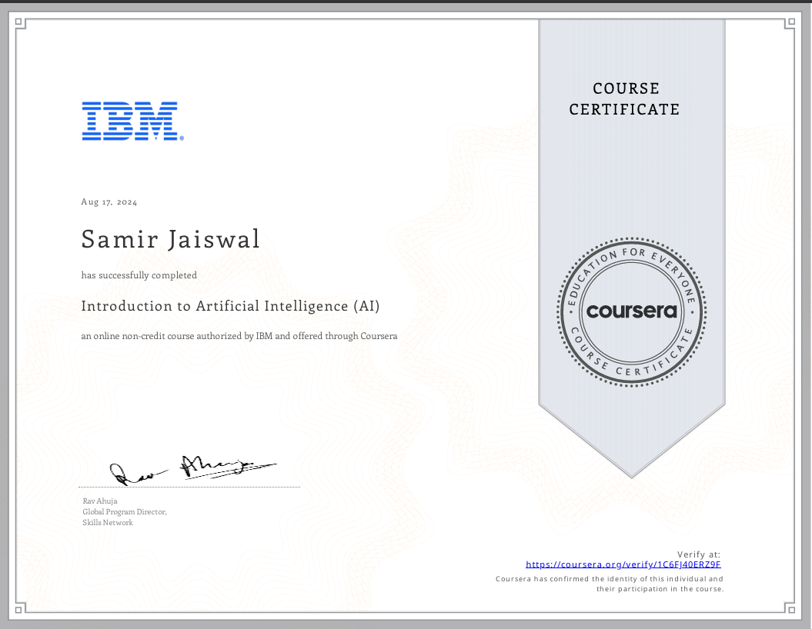
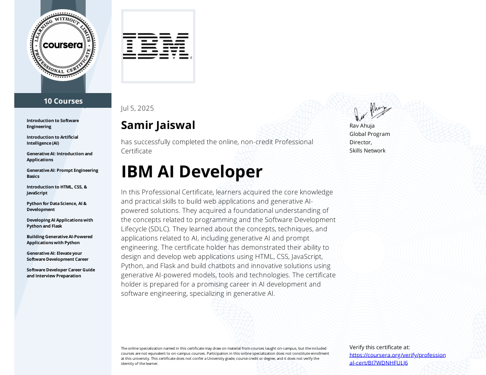
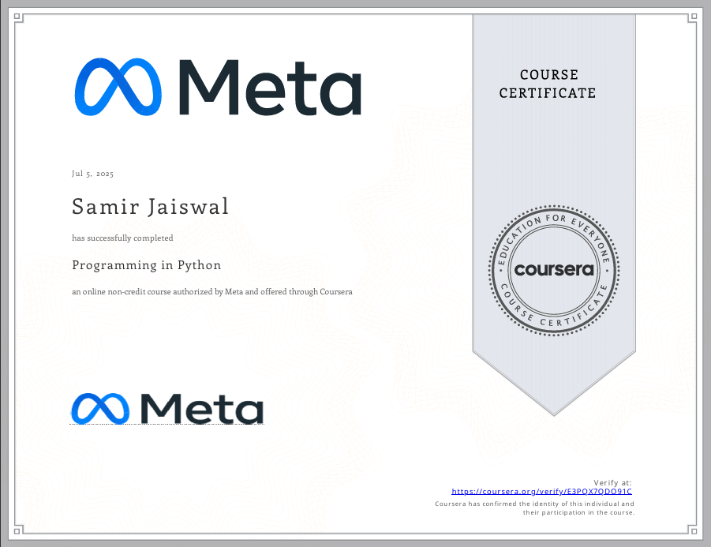
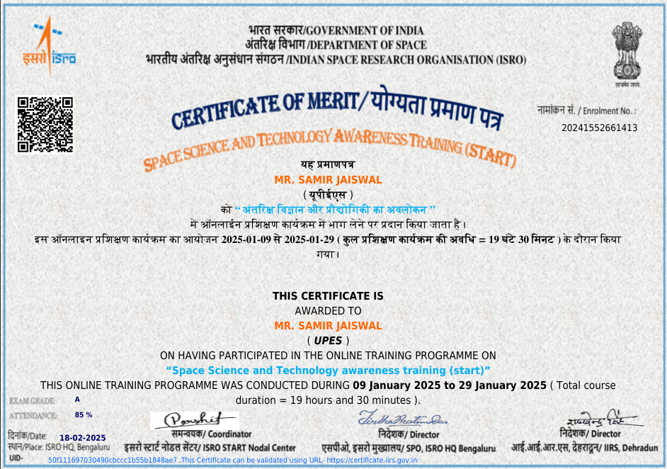

Mission
To engineer intelligent systems that bridge the gap between cutting-edge AI research and real-world applications, delivering measurable value through principled software craftsmanship.
Hello, I'm
Hi, I am Samir Jaiswal, AI/ML Engineer and Full Stack Developer with over a year of experience building intelligent systems to address the real world issues we face. My educational background is solid with a B.Tech in Information Technology(9.14 CGPA) and an M.Tech in Computer Science with specialization in Artificial Intelligence and Machine Learning (8.67 CGPA). I focus on areas such as ML, DL, computer vision, generative AI, LLMs, Multi-Agent Systems and RAG. I have previously delivered production ready solutions at Siemens Technology and Services and IBM ranging from enterprise desktop apps to ML powered anomaly detection systems that got 97% AUC. Whether developing Multi-agent RAG platforms, training Super Resolution models, building healthcare and mental health analytics for predicting issues, I combine strong research and engineering skills to deliver great solutions. Let's build something amazing!
Samir Jaiswal is an AI/ML Engineer and Full Stack Developer. Samir holds an M.Tech degree in Computer Science with specialization in Artificial Intelligence and Machine Learning from University of Petroleum and Energy Studies (UPES), Dehradun (CGPA 8.67) and a B.Tech degree in Information Technology from Bharati Vidyapeeth College of Engineering, Pune (CGPA 9.14). He has previously worked as a Software Development Engineer in Siemens Technology and Services and as an AI/ML Intern in IBM. He has worked throughout the entire product development life-cycle ranging from building scalable enterprise applications utilizing .NET Core, C#, and MySQL, to building and deploying deep learning models in production to predict real-time anomalies and develop smart automation. He is experienced with python, FastAPI, django, LangGraph, PyTorch, TensorFlow, docker, sql, mongo DB, generative AI,LLMs, Multi-Agent Systems and RAG pipelines. He is a published researcher and an AI Certified Professional with expertise in building cutting edge solutions that deliver impact.
To engineer intelligent systems that bridge the gap between cutting-edge AI research and real-world applications, delivering measurable value through principled software craftsmanship.
To become a leading AI engineer who shapes the next generation of human centred AI products ,systems that are not only powerful but also transparent, reliable, and beneficial at scale.
University of Petroleum and Energy Studies (UPES)
Dehradun, India · 2024 – 2026
Full-timeBharati Vidyapeeth College of Engineering (BVCOEP)
Pune, India · 2019 – 2023
Full-timeA production-ready multi-agent RAG pipeline that streamlines IT support and incident resolution. The system uses four specialised agents Retrieval, Troubleshooting, Ticketing, and Summarisation orchestrated via LangGraph, with a FastAPI backend and ChromaDB vector store. Semantic search over 1,000+ IT support documents enables context-aware answers with intelligent escalation.
MDSR is a novel multi-degradation super-resolution model supporting 2×, 3×, and 4× upscaling across four real-world degradation types. It introduces a HRDG block with FiLM-style degradation conditioning to handle unknown degradations at inference time without retraining.
A hardware-efficient object detection system designed for deployment on resource-constrained edge devices such as Raspberry Pi and embedded microcontrollers. The project applies model quantization and compression techniques to bring real-time inference capabilities to devices with limited compute, memory, and power budgets.
A machine learning project that analyses social media datasets to identify and predict mental health disorder risks in users. Multiple ML models were benchmarked, with Random Forest emerging as the top performer. The project contributes to early detection of mental health risks through passive data signals.
A deep learning system for detecting Lumpy Skin Disease in cattle using image classification. Multiple state-of-the-art CNN architectures ResNet50, VGG16, and InceptionV3 were trained and compared, achieving 98% accuracy for early disease detection to support livestock health management.
A Django web application for intelligent file deduplication using MD5 hashing for exact duplicates and Fuzzy Matching for near-duplicate detection. The tool unifies fragmented data across file systems, reducing storage redundancy and improving data hygiene for enterprises.

2024
Foundational certification covering AI concepts, machine learning fundamentals, and IBM AI tools.

July 2025
Built AI applications using Python, Scikit-learn, Watson NLP, Flask, and prompt engineering.

August 2025
Gained solid expertise in procedural programming paradigms and logical constructs, strengthening problem-solving and coding capabilities.

February 2025
Completed ISRO-certified training on space science and technology applications.
From academic excellence to published research and industry recognition a track record built on consistency, curiosity, and impact.
Indian Journal of Technical Education
Co-authored and published "A Comprehensive Investigation and Analysis of Data Decluttering Methods with Emphasis on Fuzzy and MD5 Algorithm," contributing original research to the field of data deduplication and file management systems.
Read Paper →Bentham Science Publisher
Authored a book chapter titled "Analysing Microbiome Metagenomics to Detect Anomaly using Variational Autoencoders (VAE) and Generative Adversarial Network (GAN) for Predicting Crohn's Disease", published in Elevating Next Generation Genomic Science and Technology using Machine Learning in the Healthcare Industry. The research proposes a novel deep learning framework using VAE and GAN to tackle high-dimensionality challenges in gut microbiome metagenomic data.
View Publication →Google Scholar
Established a verified Google Scholar profile with indexed publications, cementing Samir's presence as an active contributor to academic AI and data science research.
View Profile →Feel free to reach out for collaborations, opportunities, or just a friendly chat about AI and technology.